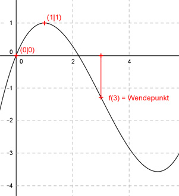

Aufgabe 31 Der Graph einer ganzrationalen Funktion 3. Grades geht durch den Nullpunkt, hat bei (1|1) ein Maximum und einen Wendepunkt bei (3|f(3)). Wie lautet seine Funktionsgleichung?  Allgemeine Form einer ganzrationalen Funktion 3. Grades: f(x) = ax3 + bx2 + cx + d f’(x) = 3ax2 + 2bx + c f’’(x) = 6ax + 2b 4 Bedingungen: 1. Geht durch den Nullpunkt bedeutet: f(0) = 0 --> a * 03 + b * 02 + c * 0 + d = 0 --> d = 0 2. Hat bei (1|1) ein Maximum bedeutet zum einen: (d = 0 eingesetzt): f(1) = 1 --> a * 13 + b * 12 + c * 1 = 1 --> a + b + c = 1 I 3. Hat bei (1|1) ein Maximum bedeutet zum anderen: f’(1) = 0 --> 3a * 12 + 2b * 1 + c = 0 --> 3a + 2b + c = 0 II 4. Hat einen Wendepunkt bei (3|f(3) bedeutet: f’’(3) = 0 --> 6a * 3 + 2b = 0 --> 18a + 2b = 0 III I * (-1) + II -a - b - c = -1 3a + 2b + c = 0 ----------------- 2a + b = -1 IV IV * (-2) + III -4a - 2b = 2 18a + 2b = 0 -------------- 14a = 2 |:14 2 1 a = ---- = --- 14 7 a = 1/7 in III eingesetzt: 1 18 * --- + 2b = 0 7 18 ---- + 2b = 0 |*7 7 18 + 14b = 0 |-18 14b = -18 |:14 18 9 b = - ---- = - --- 14 7 a = 1/7 und b = -9/7 in I eingesetzt: 1/7 - 9/7 + c = 1 |*7 1 - 9 + 7c = -7 -8 + 7c = 7 |+8 7c = 15 |:7 c = 15/7 Gesuchte Funktionsgleichung: f(x) = (1/7)x3 - (9/7)x2 + (15/7)x